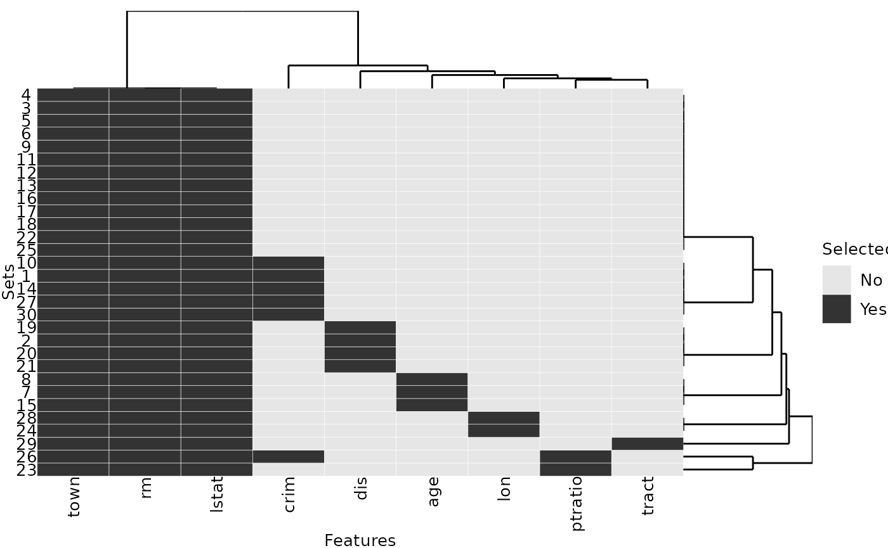
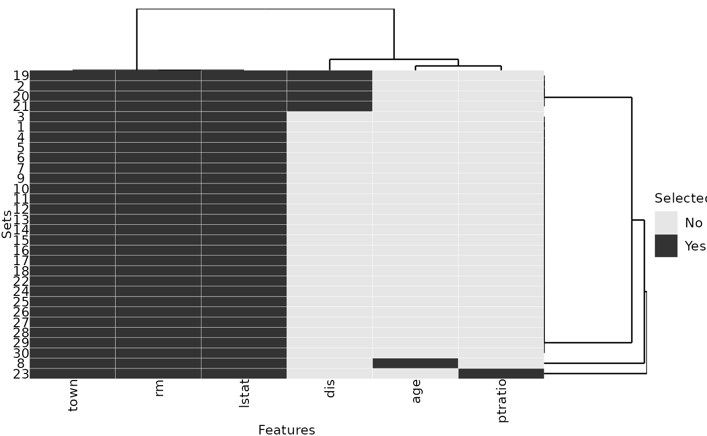
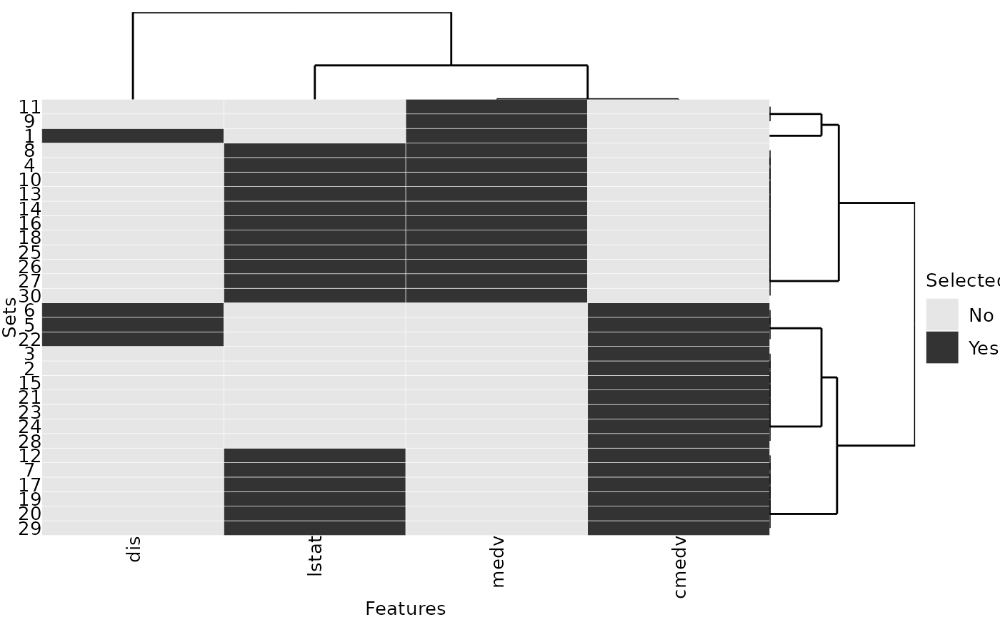

The R package stabm provides functionality for quantifying the similarity of two or more sets. The anticipated usecase is comparing sets of selected features, but other sets, e.g. gene list, can be analyzed as well. Quantifying the similarity of feature sets is necessary when assessing the feature selection stability. The stability of a feature selection algorithm is defined as the robustness of the set of selected features towards different data sets from the same data generating distribution (Kalousis, Prados, and Hilario 2007). Stability measures quantify the similarity of the sets of selected features for different training data sets. Many stability measures have been proposed in the literature, see for example Bommert, Rahnenführer, and Lang (2017), Bommert and Rahnenführer (2020), Bommert (2020) and Nogueira, Sechidis, and Brown (2018) for comparative studies. The R package stabm provides an implementation of many stability measures. Detailed definitions and analyses of all stability measures implemented in stabm are given in Bommert (2020).
A list of all stability measures implemented in stabm is available with:
## Name Corrected Adjusted Minimum Maximum
## 1 stabilityDavis FALSE FALSE 0 1
## 2 stabilityDice FALSE FALSE 0 1
## 3 stabilityHamming FALSE FALSE 0 1
## 4 stabilityIntersectionCount TRUE TRUE <NA> 1
## 5 stabilityIntersectionGreedy TRUE TRUE <NA> 1
## 6 stabilityIntersectionMBM TRUE TRUE <NA> 1
## 7 stabilityIntersectionMean TRUE TRUE <NA> 1
## 8 stabilityJaccard FALSE FALSE 0 1
## 9 stabilityKappa TRUE FALSE -1 1
## 10 stabilityLustgarten TRUE FALSE -1 1
## 11 stabilityNogueira TRUE FALSE -1 1
## 12 stabilityNovovicova FALSE FALSE 0 1
## 13 stabilityOchiai FALSE FALSE 0 1
## 14 stabilityPhi TRUE FALSE -1 1
## 15 stabilitySechidis FALSE TRUE <NA> NA
## 16 stabilitySomol TRUE FALSE 0 1
## 17 stabilityUnadjusted TRUE FALSE -1 1
## 18 stabilityWald TRUE FALSE 1-p 1
## 19 stabilityYu TRUE TRUE <NA> 1
## 20 stabilityZucknick FALSE TRUE 0 1This list states the names of the stability measures and some information about them.
stabm provides the possibility to transform these measures, such that they are corrected for chance.Now, let us consider an example with 3 sets of selected features
and a total number of 10 features. We can evaluate the feature selection stability with stability measures of our choice.
feats = list(1:3, 1:4, c(1:3, 5:7))
stabilityJaccard(features = feats)## [1] 0.5595238
stabilityNogueira(features = feats, p = 10)## [1] 0.4570136For adjusted stability measures, a matrix indicating the similarities between the features has to be specified.
mat = 0.92 ^ abs(outer(1:10, 1:10, "-"))
set.seed(1)
stabilityIntersectionCount(features = feats, sim.mat = mat, N = 1000)## [1] 0.4138325Finally, stabm also provides a visualization of the feature sets.
plotFeatures(feats)In this example, we will analyze the stability of the feature selection of regression trees on the BostonHousing2 data set from the mlbench package.
library(rpart) # for classification trees
data("BostonHousing2", package = "mlbench")
# remove feature that is a version of the target variable
dataset = subset(BostonHousing2, select = -cmedv)We write a small function which subsamples the BostonHousing2 data frame to ratio percent of the observations, fits a regression tree and then returns the used features as character vector:
fit_tree = function(target = "medv", data = dataset, ratio = 0.67, cp = 0.01) {
n = nrow(data)
i = sample(n, n * ratio)
formula = as.formula(paste(target, "~ ."))
model = rpart::rpart(formula = formula, data = data, subset = i,
control = rpart.control(maxsurrogate = 0, cp = cp))
names(model$variable.importance)
}
set.seed(1)
fit_tree()## [1] "rm" "lstat" "town" "crim"We repeat this step 30 times, resulting in a list of character vectors of selected features:
A quick analysis of the list reveals that three features are selected in all repetitions while six other features are only selected in some of the repetitions:
# Selected in each repetition:
Reduce(intersect, selected_features)## [1] "rm" "lstat" "town"
# Sorted selection frequency across all 30 repetitions:
sort(table(unlist(selected_features)), decreasing = TRUE)##
## lstat rm town crim dis age lon ptratio tract
## 30 30 30 6 4 3 2 2 1The selection frequency can be visualized with the plotFeatures() function:
plotFeatures(selected_features)
To finally express the selection frequencies with one number, e.g. to compare the stability of regression trees to the stability of a different modeling approach, any of the implemented stability measures can be calculated:
stabilityJaccard(selected_features)## [1] 0.7622989We consider a second parametrization of regression trees and observe that this parametrization provides a more stable feature selection than the default parametrization: the value of the Jaccard stability measure is higher here:
set.seed(1)
selected_features2 = replicate(30, fit_tree(cp = 0.02), simplify = FALSE)
stabilityJaccard(selected_features2)## [1] 0.9089655
plotFeatures(selected_features2)
Now, we consider a different regression problem, for which there are highly correlated features. Again, we repeatedly select features using regression trees:
dataset2 = subset(BostonHousing2, select = -town)
dataset2$chas = as.numeric(dataset2$chas)
set.seed(1)
selected_features3 = replicate(30, fit_tree(target = "rm", data = dataset2, cp = 0.075),
simplify = FALSE)We choose to assess the similarities between the features with absolute Pearson correlations, but other similarity measures could be used as well. The similarity values of the selected features show that the two features medv and cmedv are almost perfectly correlated:
# similarity matrix
sim.mat = abs(cor(subset(dataset2, select = -rm)))
sel.feats = unique(unlist(selected_features3))
sim.mat[sel.feats, sel.feats]## medv dis cmedv lstat
## medv 1.0000000 0.2499287 0.9984759 0.7376627
## dis 0.2499287 1.0000000 0.2493148 0.4969958
## cmedv 0.9984759 0.2493148 1.0000000 0.7408360
## lstat 0.7376627 0.4969958 0.7408360 1.0000000Also, each of the 30 feature sets includes either medv or cmedv:
plotFeatures(selected_features3, sim.mat = sim.mat)
When evaluating the feature selection stability, we want that the choice of medv instead of cmedv or vice versa is not seen as a lack of stability, because they contain almost the same information. Therefore, we use one of the adjusted stability measures, see listStabilityMeasures() in Section Usage.
stabilityIntersectionCount(selected_features3, sim.mat = sim.mat, N = 1000)## [1] 0.7673059The effect of the feature similarities for stability assessment can be quantified by considering the identity matrix as similarity matrix and thereby neglecting all similarities. Without taking into account the feature similarities, the stability value is much lower:
no.sim.mat = diag(nrow(sim.mat))
colnames(no.sim.mat) = row.names(no.sim.mat) = colnames(sim.mat)
stabilityIntersectionCount(selected_features3, sim.mat = no.sim.mat)## [1] 0.4168795As a second example, we analyze the stability of the clusters resulting from k-means clustering.
set.seed(1)
# select a subset of instances for visualization purposes
inds = sample(nrow(dataset2), 50)
dataset.cluster = dataset2[inds, ]
# run k-means clustering with k = 3 30 times
km = replicate(30, kmeans(dataset.cluster, centers = 3), simplify = FALSE)
# change cluster names for comparability
best = which.min(sapply(km, function(x) x$tot.withinss))
best.centers = km[[best]]$centers
km.clusters = lapply(km, function(kmi) {
dst = as.matrix(dist(rbind(best.centers, kmi$centers)))[4:6, 1:3]
rownames(dst) = colnames(dst) = 1:3
# greedy choice of best matches of clusters
new.cluster.names = numeric(3)
while(nrow(dst) > 0) {
min.dst = which.min(dst)
row = (min.dst - 1) %% nrow(dst) + 1
row.o = as.numeric(rownames(dst)[row])
col = ceiling(min.dst / nrow(dst))
col.o = as.numeric(colnames(dst)[col])
new.cluster.names[row.o] = col.o
dst = dst[-row, -col, drop = FALSE]
}
new.cluster.names[kmi$cluster]
})
# for each cluster, create a list containing the instances
# belonging to this cluster over the 30 repetitions
clusters = lapply(1:3, function(i) {
lapply(km.clusters, function(kmc) {
which(kmc == i)
})
})For each cluster, we evaluate the stability of the instances assigned to this cluster:
stab.cl = sapply(clusters, stabilityJaccard)
stab.cl## [1] 0.8488756 0.8037725 0.5485411We average these stability values with a weighted mean based on the average cluster sizes:
## [1] 0.7730162Bommert, Andrea. 2020. “Integration of Feature Selection Stability in Model Fitting.” PhD thesis, TU Dortmund University, Germany. https://doi.org/10.17877/DE290R-21906.
Bommert, Andrea, and Jörg Rahnenführer. 2020. “Adjusted Measures for Feature Selection Stability for Data Sets with Similar Features.” In Machine Learning, Optimization, and Data Science, 203–14. https://doi.org/10.1007/978-3-030-64583-0_19.
Bommert, Andrea, Jörg Rahnenführer, and Michel Lang. 2017. “A Multicriteria Approach to Find Predictive and Sparse Models with Stable Feature Selection for High-Dimensional Data.” Computational and Mathematical Methods in Medicine 2017. https://doi.org/10.1155/2017/7907163.
Kalousis, Alexandros, Julien Prados, and Melanie Hilario. 2007. “Stability of Feature Selection Algorithms: A Study on High-Dimensional Spaces.” Knowledge and Information Systems 12 (1): 95–116. https://doi.org/10.1007/s10115-006-0040-8.
Nogueira, Sarah, Konstantinos Sechidis, and Gavin Brown. 2018. “On the Stability of Feature Selection Algorithms.” Journal of Machine Learning Research 18 (174): 1–54. http://jmlr.org/papers/v18/17-514.html.